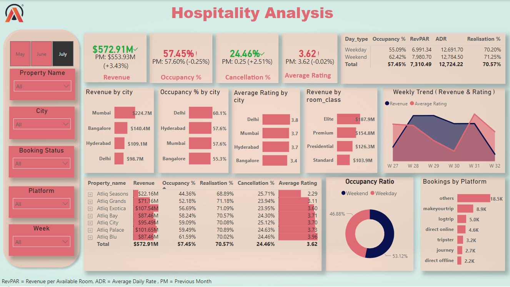
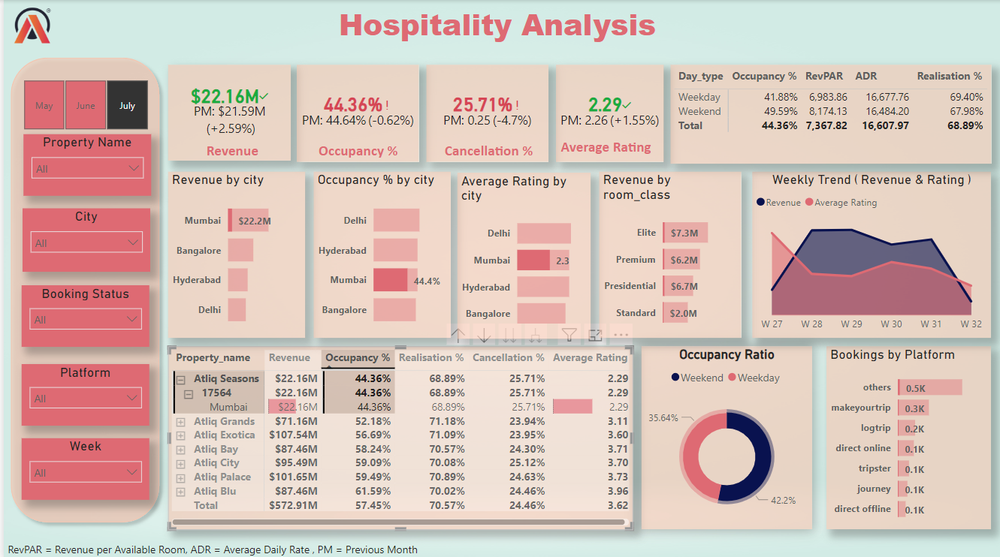

Major Insights
KPI's indicate that revenue for July is increased compared to June but the Occupancy% is decreased , Cancellation% is decreased.
AtliQ Blu has the highest Occupancy% and highest rating.
Mumbai generated highest revenue followed by Banglore, Hyderabad, Delhi.
Delhi has highest Occupancy% and average rating followed by Hyderabad, Mumbai, Banglore.
AtliQ Palace performed better compared to others with 101.65M revenue, Occupancy% 59.5, Cancellation% 24.63.
Week 29 recorded highest revenue among all , which is 139.7M.
Example to know why Revenue is low for a Property:
1.We can see the property 17564 AtliQ seasons has lowes Occupancy% and also lowest rating.
2.It also has highest Cancellation% which indicates low rating.
3.We can observe that the ADR for weekend is very low than weekday, if we try to use dynamic pricing and match the price similar to weekedays the ADR will be increased which will show a increase in revenue.